Praktikum ini bertujuan supaya mahasiswa mampu membuat basic form
pada Flutter untuk menerima inputan dari keyboard sekaligus
mengelola nilai inputan tersebut. Secara lebih rinci, setelah
menyelesaikan praktikum ini mahasiswa diharapkan mampu memahami
perbedaan penggunaan widget TextField dan
TextFormField, mengelola nilai inputan pengguna
menggunakan TextEditingController, serta
menerapkan validasi form menggunakan properti
validator bersama
GlobalKey<FormState>.
Selain itu, konsep basic form yang dipelajari juga diterapkan langsung pada studi kasus nyata berupa aplikasi kalkulator sederhana yang menjalankan operasi kabataku (kali, bagi, tambah, kurang), sehingga mahasiswa terbiasa menghubungkan input, validasi, logika perhitungan, dan tampilan hasil dalam satu alur yang utuh.
Basic Form adalah kumpulan widget input pada
Flutter yang berfungsi menerima nilai dari pengguna, seperti
TextField, TextFormField,
CheckBox, Switch, Dropdown,
Radio, Dialog, DatePicker,
BottomSheet, dan Snackbar. Alur kerjanya
diawali dengan menampilkan field inputan, memeriksa apakah nilai
yang dimasukkan sudah sesuai aturan atau format yang ditetapkan,
lalu mengambil nilai tersebut setelah proses pengecekan selesai
dilakukan.
TextField adalah widget dasar untuk menerima
masukan teks dari keyboard, umum dipakai pada form login maupun
pencarian. Widget ini memiliki properti decoration,
controller, dan keyboardType yang
lengkap, serta dapat dipantau perubahannya melalui
onChanged. Karena tidak memiliki mekanisme validasi
bawaan, nilai yang diketik hanya dikelola melalui
TextEditingController tanpa pengecekan aturan
tertentu.
TextFormField merupakan versi lengkap dari
TextField yang sudah terintegrasi dengan logika
validasi dan manajemen state sebuah Form. Widget ini
memiliki properti validator untuk memeriksa
kesesuaian input terhadap aturan yang ditentukan, akan menampilkan
pesan error secara otomatis di bawah field jika validasi gagal,
dan dapat divalidasi secara kolektif melalui
FormState.
Agar validasi banyak field bisa dijalankan sekaligus dari satu
titik, Flutter menyediakan
GlobalKey<FormState>, yaitu objek key unik
yang dipakai untuk mengakses state suatu widget secara global dari
widget lain — misalnya memanggil method
validate() dari luar widget Form pada
onPressed sebuah ElevatedButton. Ketika
_formKey.currentState!.validate() dipanggil, Flutter
akan mengecek setiap TextFormField yang terikat pada
Form tersebut dan menjalankan fungsi
validator masing-masing; jika ada validator yang
mengembalikan String pesan error, proses dihentikan
dan validate() mengembalikan
false sekaligus menampilkan pesan tersebut, sedangkan
jika seluruh validator mengembalikan null maka
validate() mengembalikan true.
Perubahan data pada StatefulWidget tidak akan
langsung terlihat di layar tanpa memanggil
setState(), sebuah method yang memberitahu
Flutter bahwa state telah berubah sehingga widget terkait perlu
dibangun ulang (rebuild). Sebaliknya, untuk widget yang nilainya
tidak pernah berubah, kata kunci const dipakai
agar widget tersebut dijadikan konstanta pada saat kompilasi —
hanya dibangun sekali dan disimpan di memori, sehingga tidak perlu
di-build ulang setiap kali terjadi perubahan state pada widget
lain dan proses reload menjadi lebih cepat.
- Laptop / Komputer dengan Flutter SDK dan Dart terinstall
- Visual Studio Code (Code Editor) dengan ekstensi Flutter & Dart
- Chrome Browser / Android Emulator sebagai target device untuk menjalankan aplikasi
- Modul Praktikum Aplikasi Mobile — Praktikum 3: Input Widgets dan Basic Form
Praktikum ini terdiri dari dua file basic form yang dibuat secara
terpisah di dalam folder lib, yaitu
form_textfield.dart yang memakai widget
TextField polos tanpa validasi, dan
form_textformfield.dart yang memakai widget
TextFormField lengkap dengan validasi. Kedua file
dikerjakan satu per satu secara berurutan, mulai dari struktur
dasar hingga pengujian, sebelum berpindah ke file berikutnya.
Langkah pertama adalah membuat file dart baru dengan nama
form_textfield.dart di dalam folder
lib, lalu membangun kerangka aplikasi.
MyApp dijadikan root widget yang mengembalikan
MaterialApp berisi Scaffold dengan
AppBar berjudul "Basic Form" dan body berupa widget
MyForm yang akan diisi form input pada langkah
selanjutnya.
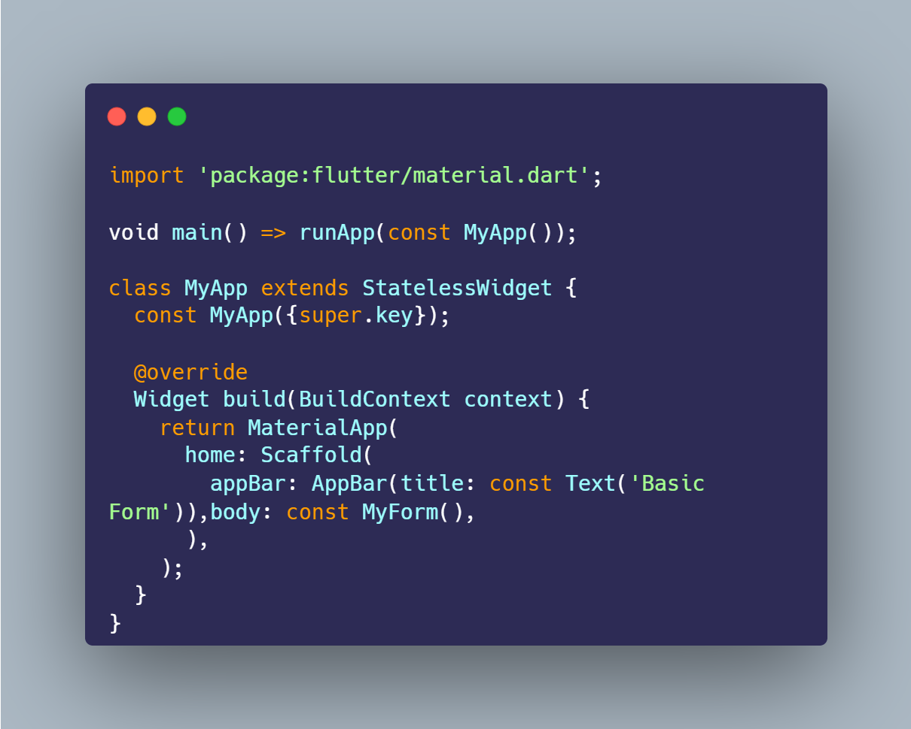
void main() => runApp(const MyApp()) adalah
titik masuk aplikasi yang langsung menjalankan widget
MyApp. Widget ini berupa
StatelessWidget karena tampilan awalnya tidak
perlu berubah, dan cukup mengembalikan
MaterialApp sebagai pembungkus utama seluruh
aplikasi Flutter.
Di dalam MaterialApp, properti
home diisi Scaffold yang menyediakan
struktur halaman standar Material Design.
AppBar(title: const Text('Basic Form'))
menampilkan judul "Basic Form" di bagian atas layar, sedangkan
body: const MyForm() memanggil widget form yang
isinya akan dilengkapi pada langkah berikutnya.
MyForm dibuat sebagai
StatefulWidget karena nilai inputan dapat berubah
seiring interaksi pengguna. Di dalam _MyFormState,
dideklarasikan sebuah TextEditingController untuk
mengambil dan mengelola teks yang diketik pengguna, lengkap
dengan method dispose() untuk membersihkan
controller saat widget dihancurkan agar tidak terjadi kebocoran
memori.
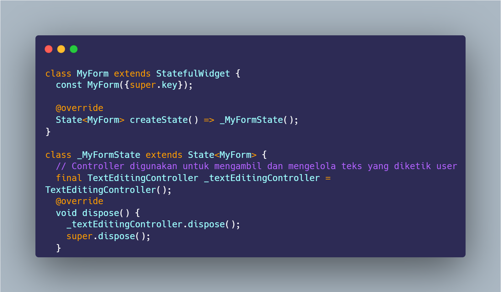
Baris
final TextEditingController _textEditingController =
TextEditingController();
membuat variabel controller yang bertugas mengambil apa pun
yang diketik user pada field. Controller inilah yang nantinya
dihubungkan ke widget TextField lewat properti
controller.
-
@override void dispose()— method siklus hidup widget yang otomatis dipanggil saat widget dihapus dari tree. -
_textEditingController.dispose();— membersihkan resource controller. -
super.dispose();— memastikan proses dispose bawaan dariStatetetap berjalan.
Tampilan form dibungkus Padding dan
Column, berisi Text label,
SizedBox sebagai jarak, lalu widget
TextField yang dilengkapi decoration,
controller, keyboardType, dan
onChanged agar setiap ketikan pengguna dapat
dipantau.
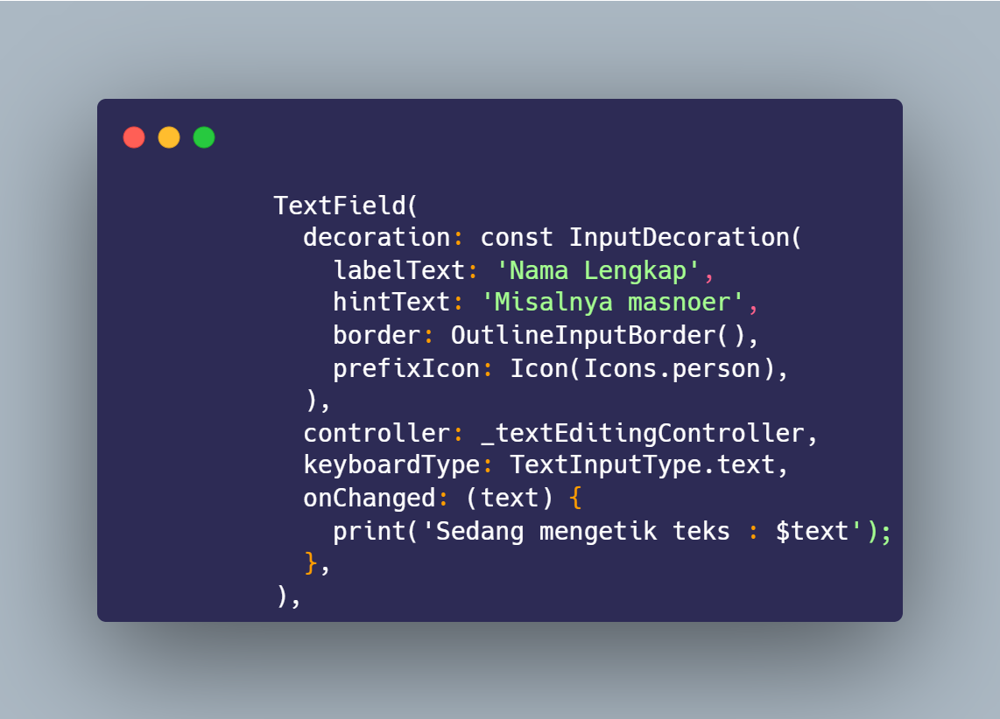
Properti
decoration: InputDecoration(...) mengatur
tampilan field: labelText: 'Nama Lengkap' sebagai
label mengambang,
hintText: 'Misalnya masnoer' sebagai contoh teks
placeholder, border: OutlineInputBorder() memberi
garis tepi kotak, dan
prefixIcon: Icon(Icons.person) menambah ikon
orang di sisi kiri field.
Selanjutnya
controller: _textEditingController menghubungkan
field dengan controller yang sudah dibuat sebelumnya,
sementara
keyboardType: TextInputType.text menentukan
keyboard yang muncul berupa keyboard teks biasa. Terakhir,
onChanged: (text) { print('Sedang mengetik teks : $text');
}
adalah event listener yang berjalan setiap kali teks berubah —
dipakai di sini untuk mencetak teks yang sedang diketik ke
console sebagai bukti bahwa perubahan input benar-benar
terpantau secara realtime.
Setelah field inputan, ditambahkan
ElevatedButton berlabel "Tampilkan nama" yang
ketika ditekan akan mengambil nilai dari controller dan
menampilkannya melalui SnackBar di bagian bawah
layar.
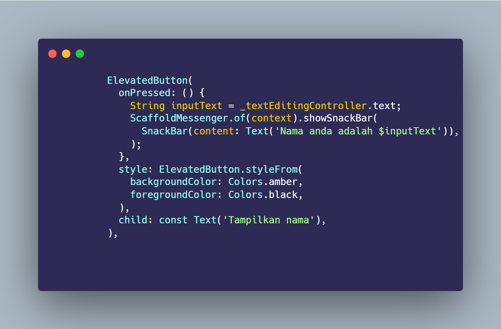
Saat tombol ditekan, baris
String inputText = _textEditingController.text;
mengambil nilai terakhir yang tersimpan pada controller dan
menampungnya ke variabel inputText. Nilai ini
kemudian ditampilkan lewat
ScaffoldMessenger.of(context).showSnackBar(SnackBar(content:
Text('Nama anda adalah $inputText'))), yang memunculkan notifikasi singkat di bagian bawah layar
berisi gabungan teks statis dan nilai inputan.
Tampilan tombol sendiri diatur lewat
ElevatedButton.styleFrom(backgroundColor: Colors.amber,
foregroundColor: Colors.black)
sehingga warna latarnya amber dengan teks berwarna hitam.
Setelah seluruh kode selesai, aplikasi dijalankan (RUN) untuk memastikan alur kerja TextField berjalan sesuai rencana: teks yang diketik harus benar-benar sama dengan teks yang muncul di SnackBar setelah tombol ditekan.
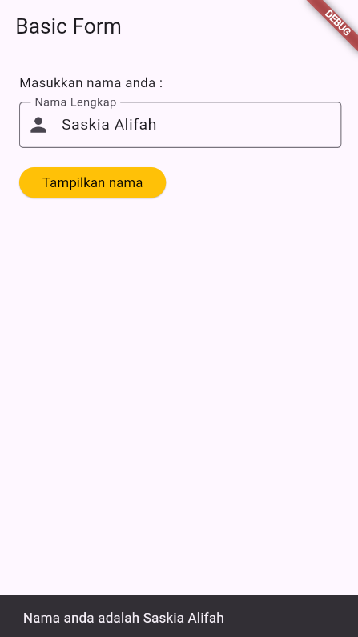
Karena TextField tidak memiliki validator,
aplikasi ini tidak menolak input apa pun — termasuk field yang
dibiarkan kosong. Menekan tombol pada kondisi field kosong
tetap memunculkan SnackBar, hanya saja dengan nilai
inputText berupa string kosong, yang memang
menjadi perilaku normal dari TextField tanpa
validasi.
form_textfield.dart telah berjalan dengan benar.
File baru form_textformfield.dart dibuat dengan
struktur MyApp dan Scaffold yang
serupa dengan file sebelumnya. Bedanya, widget
MyFormText kali ini dilengkapi
_formKey bertipe
GlobalKey<FormState> agar validasi dapat
dipanggil dari luar widget Form, ditambah dua
controller terpisah untuk field nama dan email.
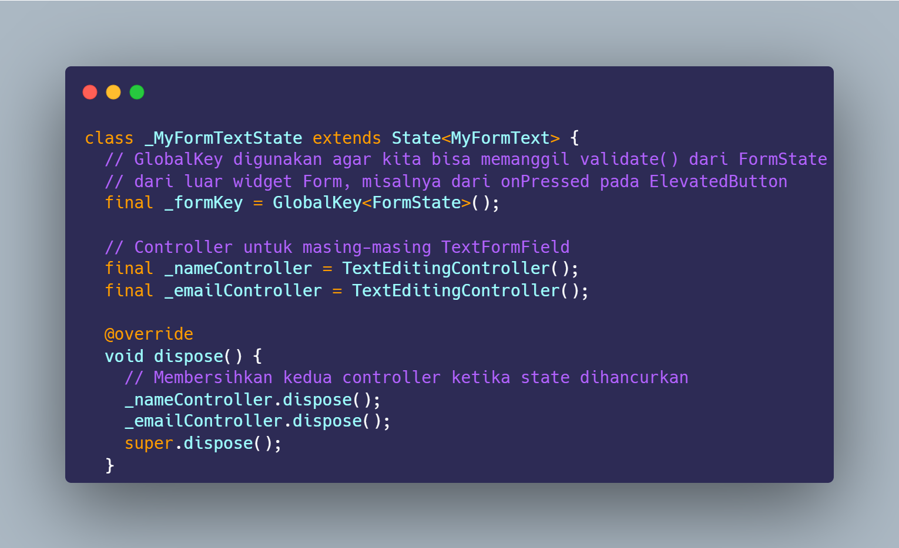
Baris
final _formKey = GlobalKey<FormState>();
membuat key unik yang menjadi jembatan untuk mengakses
FormState dari luar widget Form —
nantinya key inilah yang dipanggil dari
onPressed tombol Submit untuk menjalankan
validasi. Dua baris berikutnya,
final _nameController = TextEditingController();
dan
final _emailController = TextEditingController();, menyiapkan controller terpisah untuk masing-masing field
nama dan email, sedangkan method
dispose() membersihkan keduanya ketika state
dihancurkan.
Seluruh tampilan dibungkus widget Form dengan
properti key: _formKey, sehingga status validasi
seluruh TextFormField di dalamnya dapat dikelola
dan dipanggil bersama-sama melalui
_formKey.currentState.
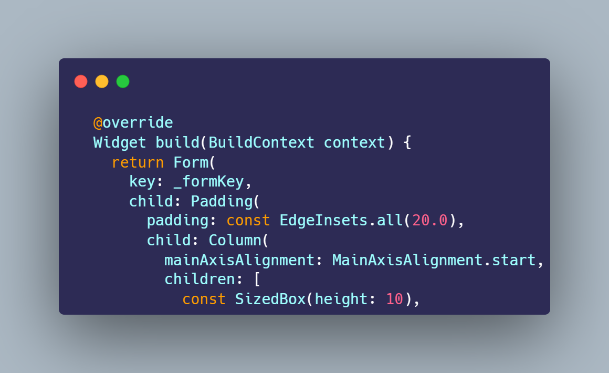
Form(key: _formKey, child: ...) mendaftarkan
seluruh TextFormField di dalam child sebagai satu
kesatuan yang statusnya dipegang oleh _formKey.
Struktur di dalamnya tetap memakai Padding dan
Column seperti biasa agar tata letak antar field
tetap rapi dengan jarak SizedBox di antaranya.
Field pertama menggunakan TextFormField yang
dihubungkan ke _nameController dan diberi fungsi
validator untuk memastikan nama tidak boleh
dikosongkan.
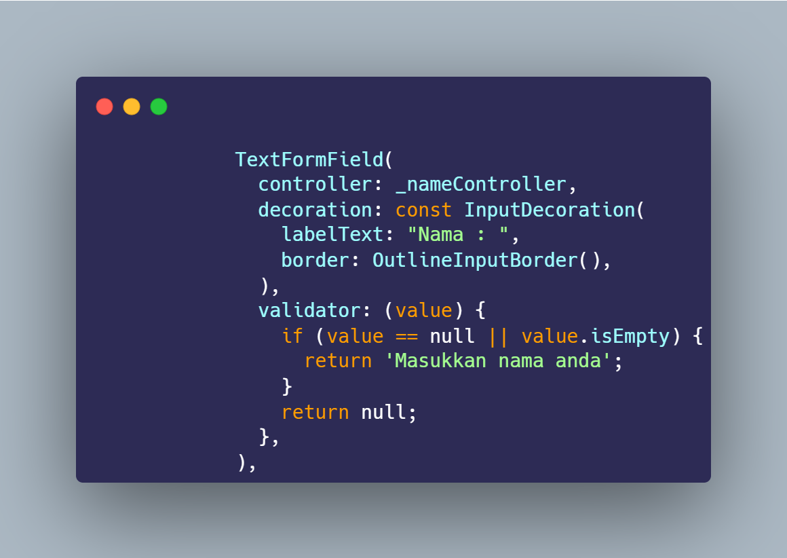
Selain controller: _nameController yang
menghubungkan field dengan controller nama dan
decoration yang mengatur label serta garis tepi,
bagian terpenting ada pada fungsi
validator: (value) { if (value == null || value.isEmpty) {
return 'Masukkan nama anda'; } return null; }. Fungsi ini mengembalikan pesan error saat field masih
kosong, dan mengembalikan null — yang berarti
tidak ada error — ketika sudah terisi.
Field kedua menggunakan TextFormField yang
dihubungkan ke _emailController dengan validasi
bertingkat: pertama memeriksa apakah field kosong, kemudian
memeriksa apakah teks yang dimasukkan mengandung karakter
@ sebagai syarat format email yang wajar.
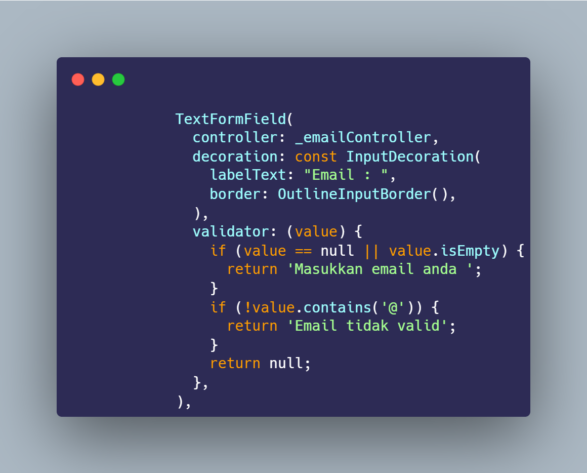
Kondisi pertama,
if (value == null || value.isEmpty) { return 'Masukkan
email anda '; }, menolak field yang masih kosong. Jika field sudah terisi,
barulah kondisi kedua dicek:
if (!value.contains('@')) { return 'Email tidak valid';
}
menolak input yang tidak mengandung karakter @,
sebagai pengecekan format email sederhana. Apabila kedua
kondisi ini terlewati tanpa masalah, fungsi mengembalikan
null yang menandakan email dianggap valid.
Method _submitForm() memanggil
_formKey.currentState!.validate() untuk menjalankan
seluruh validator sekaligus. Jika hasilnya true,
nilai _nameController dan
_emailController diambil lalu ditampilkan melalui
SnackBar. Method ini dihubungkan ke
onPressed pada
ElevatedButton "Submit".
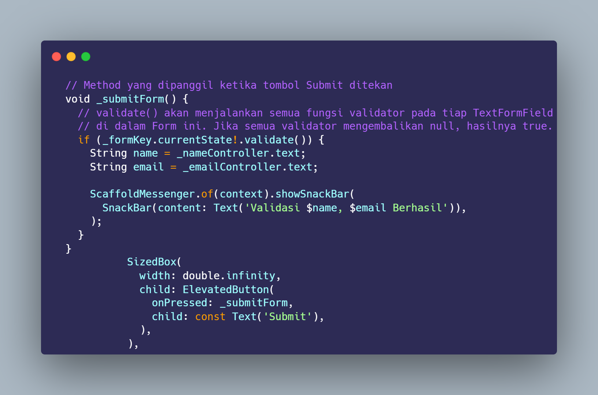
Baris
if (_formKey.currentState!.validate())
menjalankan validasi seluruh field dalam
Form sekaligus; tanda seru memastikan
currentState tidak bernilai null.
Apabila validasi lolos,
String name = _nameController.text; dan
String email = _emailController.text; mengambil
nilai terakhir dari masing-masing controller, lalu ditampilkan
lewat
SnackBar(content: Text('Validasi $name, $email
Berhasil')).
Agar tombol memenuhi lebar layar, dipakai
SizedBox(width: double.infinity, child:
ElevatedButton(onPressed: _submitForm, child: const
Text('Submit')))
— tombol ini memanggil _submitForm setiap kali
ditekan.
Aplikasi dijalankan dan diuji dengan beberapa skenario untuk
membuktikan bahwa validator benar-benar bekerja: kondisi field
masih kosong, kondisi email tanpa karakter @, dan
kondisi seluruh input sudah valid.
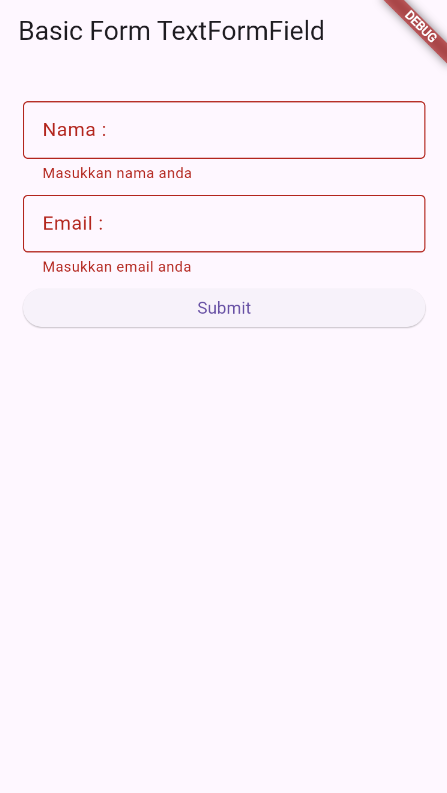
Hasil ini membuktikan bahwa validate() berhasil
menjalankan validator pada kedua field sekaligus dan
menghentikan proses submit karena keduanya mengembalikan pesan
error.
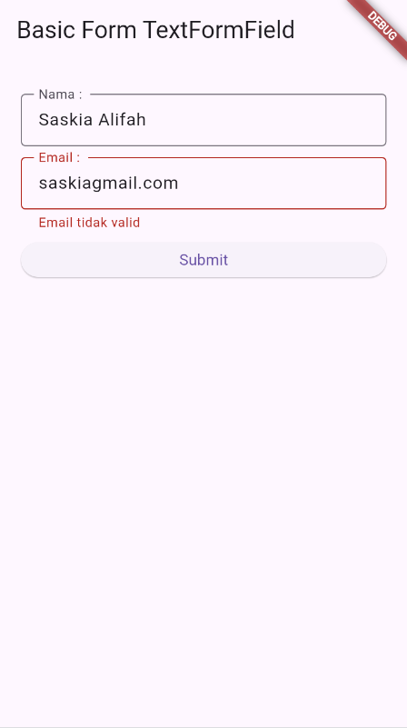
Skenario ini secara khusus membuktikan kondisi kedua pada
validator email, yaitu if (!value.contains('@')).
Meski field email sudah tidak kosong, validasi tetap
menolaknya karena format yang dimasukkan belum menyerupai
alamat email.
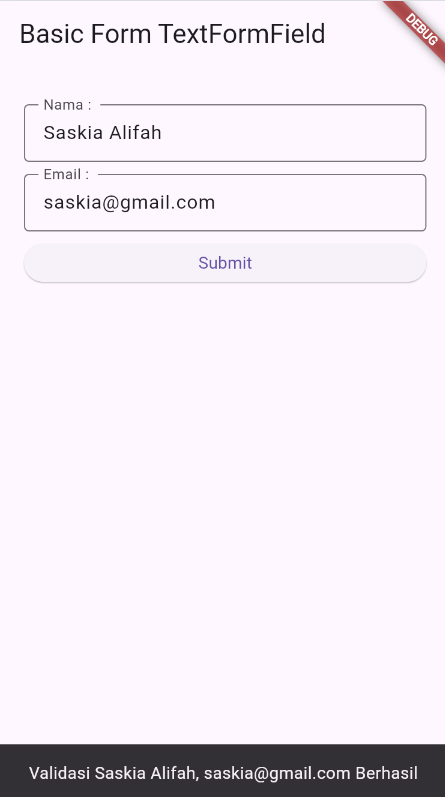
validator dan
GlobalKey<FormState> pada
form_textformfield.dart berfungsi dengan benar,
baik untuk menolak input kosong, menolak format email yang
salah, maupun menerima input yang sudah valid.
File kalkulator_kabataku.dart dibuat dengan
kerangka MyApp yang me-render
Scaffold berjudul "Kalkulator Kabataku" dan body
KalkulatorForm, sebuah
StatefulWidget yang menjadi wadah seluruh logika
kalkulator.
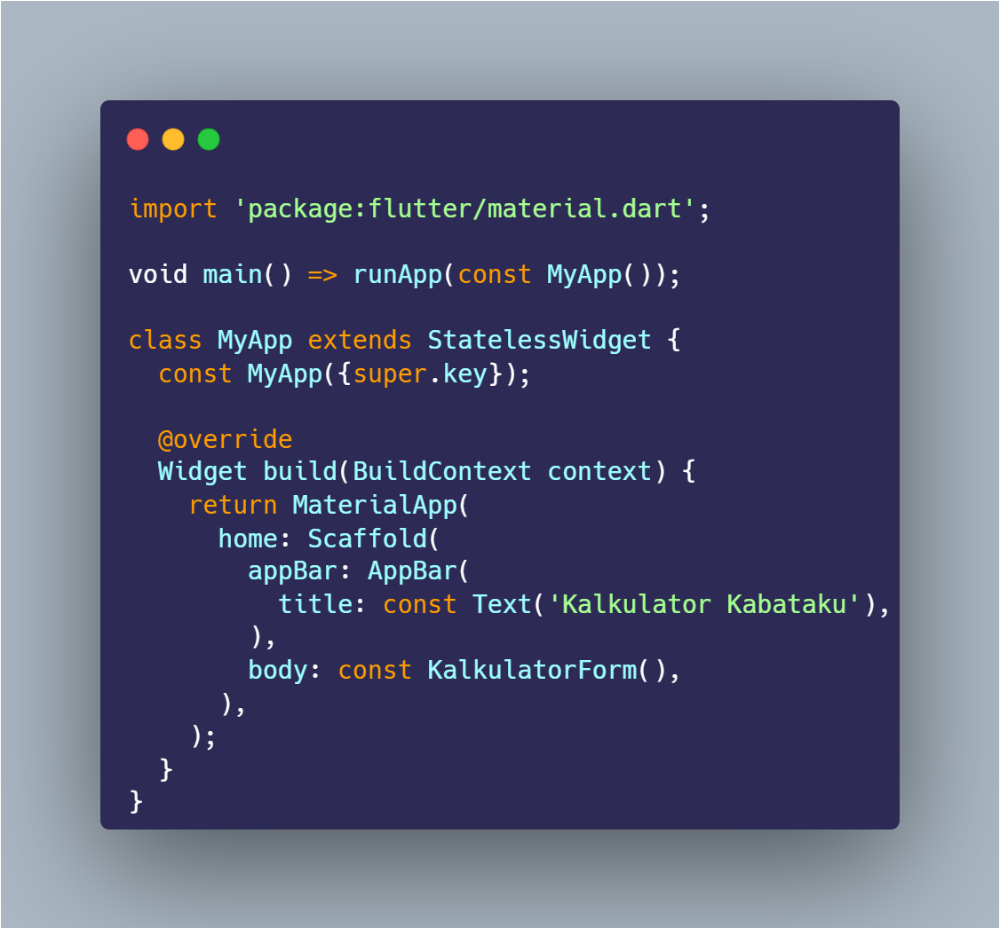
AppBar(title: const Text('Kalkulator Kabataku'))
menampilkan judul aplikasi di bagian atas layar, sedangkan
KalkulatorForm sengaja dideklarasikan sebagai
StatefulWidget karena hasil perhitungan perlu
diperbarui secara dinamis (rebuild) setiap kali salah satu
operasi dijalankan.
Di dalam _KalkulatorFormState dideklarasikan
_formKey untuk validasi, dua controller
_angka1Controller dan
_angka2Controller untuk menampung kedua inputan
angka, serta variable _hasil bertipe
String untuk menyimpan teks hasil operasi yang akan
ditampilkan pada layar.
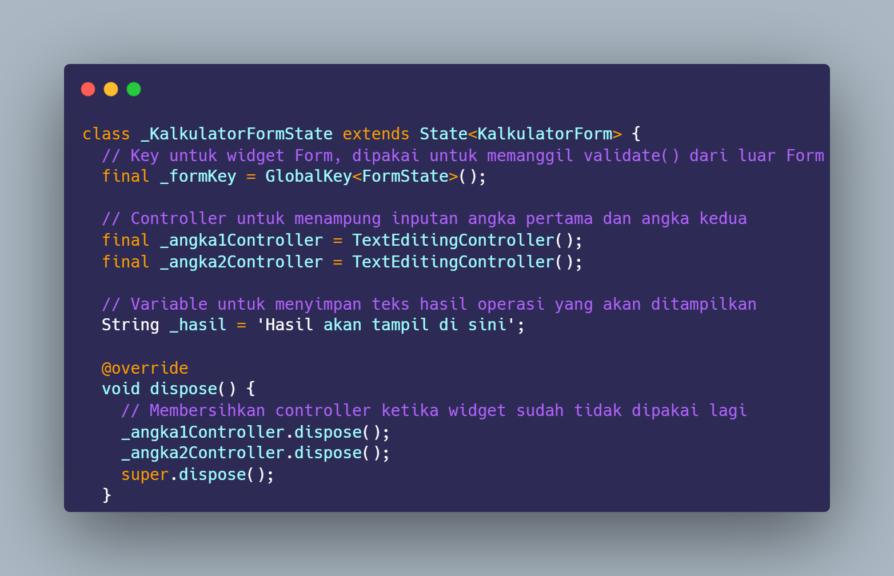
Sama seperti pada form_textformfield.dart,
_formKey di sini berfungsi memanggil
validate() dari luar Form. Yang membedakan adalah
variabel
String _hasil = 'Hasil akan tampil di sini';,
yaitu nilai awal teks hasil sebelum operasi apa pun dijalankan
— variabel inilah yang akan diperbarui lewat
setState() setiap kali tombol operasi ditekan.
Method dispose() tetap disertakan untuk
membersihkan kedua controller angka.
Kedua field angka menggunakan TextFormField dengan
keyboardType: TextInputType.numberWithOptions(decimal:
true)
agar keyboard yang muncul adalah keyboard angka, serta validator
bersama _validasiAngka yang memeriksa field tidak
kosong dan berupa angka yang valid.
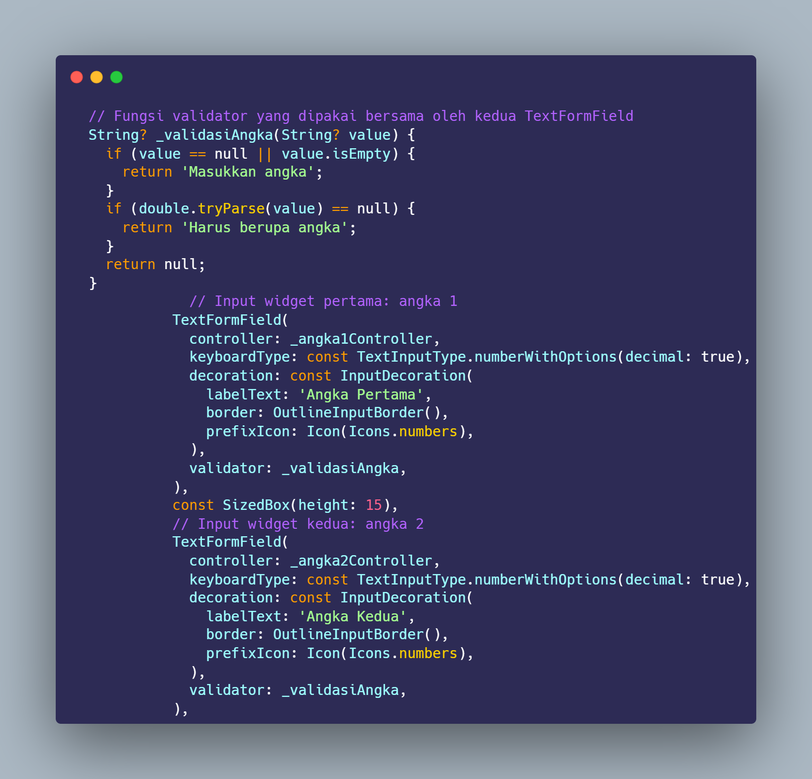
Fungsi
String? _validasiAngka(String? value) sengaja
dipisah agar dapat dipakai bersama oleh kedua field. Fungsi
ini mengembalikan pesan 'Masukkan angka' jika
field kosong, mengembalikan
'Harus berupa angka' jika
double.tryParse(value) gagal mengonversi teks
menjadi angka, atau mengembalikan null jika input
sudah valid.
-
keyboardType: const TextInputType.numberWithOptions(decimal: true)— menampilkan keyboard numerik dengan dukungan angka desimal. -
prefixIcon: Icon(Icons.numbers)— ikon angka di depan tiap field sebagai penanda visual.
Method _hitung(String operator) pertama-tama
menjalankan _formKey.currentState!.validate(), lalu
mengonversi teks dari kedua controller menjadi
double menggunakan double.parse().
Operasi yang dijalankan ditentukan lewat
switch berdasarkan parameter operator,
mencakup tambah, kurang,
kali, dan bagi, dengan penanganan
khusus untuk kasus pembagian dengan nol.
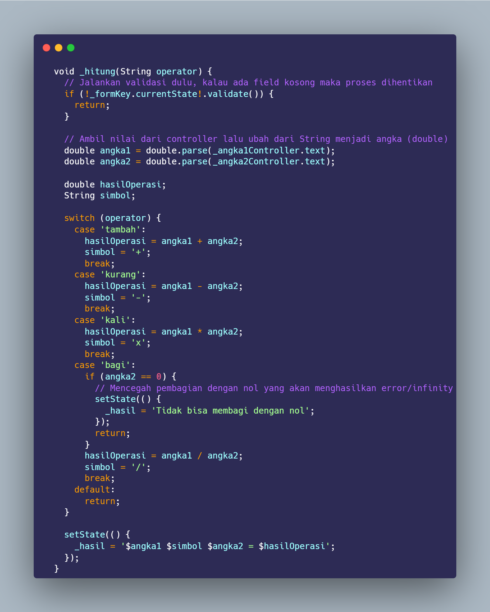
Baris
if (!_formKey.currentState!.validate()) { return; }
menghentikan proses lebih awal apabila ada field yang belum
valid, sehingga perhitungan tidak akan dijalankan pada data
yang salah. Setelah lolos validasi,
double angka1 = double.parse(_angka1Controller.text);
dan baris serupa untuk angka2 mengubah teks inputan menjadi
tipe numerik agar dapat dihitung.
Struktur switch (operator) kemudian menentukan
rumus dan simbol berdasarkan tombol yang ditekan:
tambah (+), kurang (−),
kali (×), dan bagi (÷). Khusus pada
case 'bagi', terdapat pengecekan tambahan
if (angka2 == 0) yang langsung memanggil
setState() untuk menampilkan pesan "Tidak bisa
membagi dengan nol" dan menghentikan proses, sehingga hasil
infinity dapat dicegah. Di akhir method,
setState(() { _hasil = '$angka1 $simbol $angka2 =
$hasilOperasi'; });
memperbarui tampilan dengan hasil operasi yang baru saja
dihitung.
Empat tombol operasi (Kali, Bagi, Tambah, Kurang) disusun dalam
dua baris Row dengan
mainAxisAlignment: MainAxisAlignment.spaceBetween,
masing-masing tombol dibungkus Expanded agar lebar
tombol merata. Setiap tombol diberi warna berbeda dan memanggil
_hitung() dengan parameter operator yang sesuai.
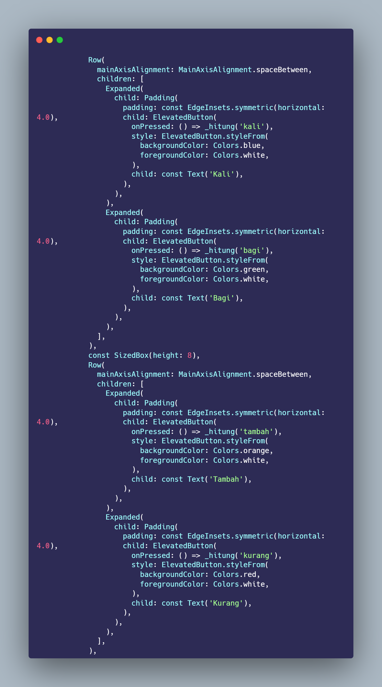
Setiap tombol memakai
onPressed: () => _hitung('kali') dan
sejenisnya, meneruskan string operator berbeda ke method
_hitung() yang sama, sehingga logika perhitungan
tidak perlu ditulis ulang untuk tiap tombol. Supaya keempat
tombol memenuhi ruang secara merata, masing-masing dibungkus
Expanded(child: Padding(...)) dengan padding
horizontal 4.0 sebagai jarak antar tombol, lalu diberi warna
berbeda lewat
ElevatedButton.styleFrom(backgroundColor: ...) —
Kali biru, Bagi hijau, Tambah oranye, dan Kurang merah — agar
mudah dibedakan secara visual.
Hasil operasi ditampilkan menggunakan widget
Text yang dibungkus Container berlatar
abu-abu dengan sudut membulat, sehingga tampil sebagai kotak
hasil yang jelas terpisah dari area input dan tombol.
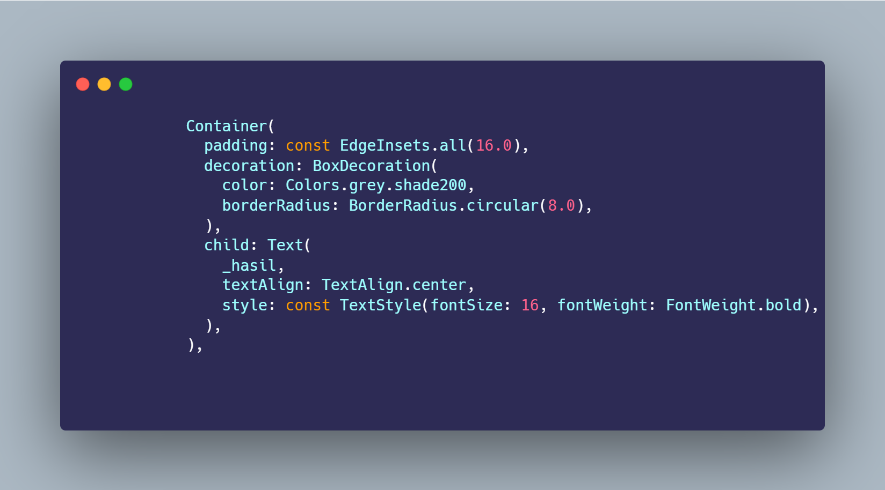
Container(padding: const EdgeInsets.all(16.0), decoration:
BoxDecoration(color: Colors.grey.shade200, borderRadius:
BorderRadius.circular(8.0)), child: Text(_hasil, ...))
membungkus teks hasil dengan padding, warna latar abu-abu
muda, dan sudut membulat agar tampil rapi. Teksnya sendiri
diatur rata tengah lewat
textAlign: TextAlign.center dengan gaya
TextStyle(fontSize: 16, fontWeight: FontWeight.bold)
agar mudah dibaca.
Aplikasi dijalankan lalu diuji dengan beberapa skenario: keempat operasi hitung dengan angka valid, kondisi field angka masih kosong atau bukan angka, serta kondisi khusus pembagian dengan nol — untuk membuktikan bahwa validasi dan logika perhitungan berjalan sesuai rancangan.
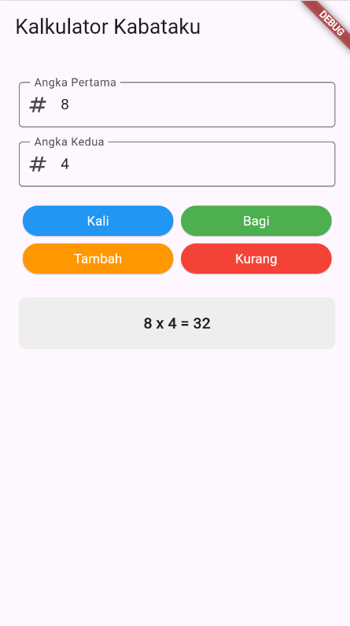
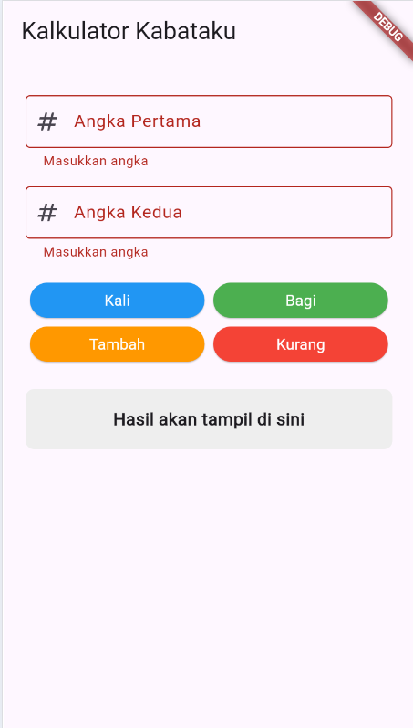
Skenario ini membuktikan baris
if (!_formKey.currentState!.validate()) { return; }
pada method _hitung() benar-benar mencegah
perhitungan berjalan ketika input belum valid, sehingga hasil
pada Container tidak berubah dari kondisi sebelumnya.
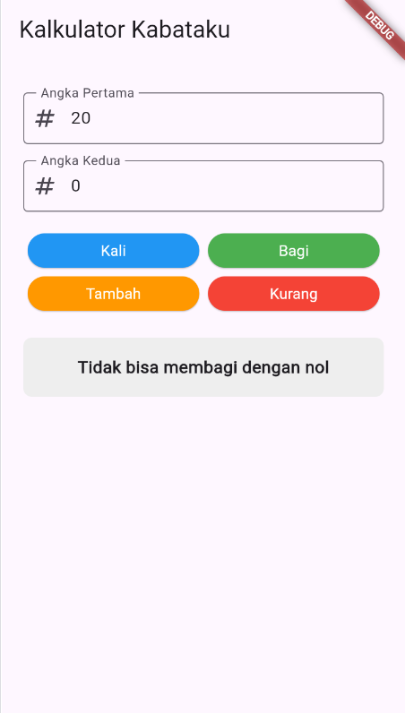
kalkulator_kabataku.dart telah berfungsi dengan
baik.
Melalui serangkaian langkah pada Praktikum 3 ini, implementasi input widgets dan basic form pada Flutter berhasil diselesaikan secara menyeluruh, mulai dari widget input paling sederhana hingga studi kasus yang melibatkan validasi dan logika perhitungan.
Pada form_textfield.dart, widget
TextField terbukti mampu menerima inputan dari
keyboard dan mengelolanya lewat
TextEditingController, kemudian menampilkannya
kembali melalui SnackBar ketika tombol ditekan —
namun karena tidak memiliki validator, field kosong pun tetap
diterima tanpa penolakan. Sebaliknya, pada
form_textformfield.dart, penerapan
GlobalKey<FormState> beserta
validate() terbukti berhasil menahan proses submit
ketika field masih kosong maupun ketika email tidak mengandung
karakter "@", dan baru meloloskan proses ketika seluruh input
sudah sesuai aturan.
Konsep const untuk widget statis dan
setState() untuk memperbarui tampilan juga terbukti
berjalan sesuai teori, begitu pula method
dispose() yang secara konsisten membersihkan seluruh
controller di setiap file. Pada bagian latihan, aplikasi
kalkulator kabataku berhasil menjalankan keempat operasi (tambah,
kurang, kali, bagi) menggunakan dua
TextFormField angka yang tervalidasi, empat
ElevatedButton operasi, serta menampilkan hasil lewat
widget Text di dalam Container — lengkap
dengan penanganan kasus input kosong/bukan angka dan pembagian
dengan nol yang keduanya terbukti berhasil dicegah pada tahap
pengujian.
Berdasarkan seluruh tahapan praktikum yang telah dilaksanakan, diperoleh beberapa poin kesimpulan penting:
-
TextFieldcocok digunakan untuk input sederhana tanpa kebutuhan validasi kompleks, sedangkanTextFormFieldlebih sesuai untuk form yang membutuhkan pengecekan aturan input seperti pendaftaran atau login. -
TextEditingController adalah komponen kunci
untuk mengambil, memantau, dan pada akhirnya membersihkan nilai
inputan pengguna, dan wajib di-
dispose()untuk mencegah kebocoran memori. -
GlobalKey<FormState> beserta method
validate()memungkinkan validasi banyak field dijalankan sekaligus dari satu titik, terbukti dari pengujian yang berhasil menahan submit pada field kosong maupun format email yang salah, sehingga kode lebih terstruktur dibanding validasi manual per field. -
setState() adalah mekanisme wajib pada
StatefulWidgetagar perubahan data seperti hasil perhitungan kalkulator benar-benar tercermin pada tampilan. -
Studi kasus kalkulator kabataku membuktikan bahwa kombinasi
TextFormField,validator, danElevatedButtondapat diterapkan pada kasus nyata yang melibatkan logika perhitungan dan penanganan kondisi khusus seperti pembagian dengan nol.
Seluruh source code praktikum ini dapat diakses pada repository Github berikut: